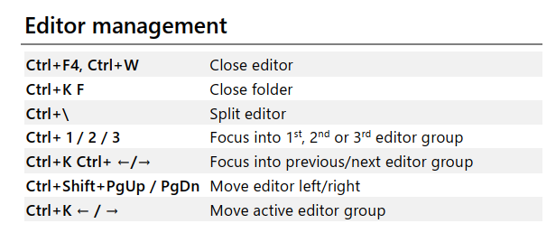

- 一些应该会用到的快捷键
- 全局
- 基本的编辑
- Navigation & Debug(监控？)
- 查找替换
- 针对工作区全部文件的查找和替换操作
- 自定义
- 文件管理
- 展示
- 左侧边栏快速打开命令
- 编辑器窗口管理
一些应该会用到的快捷键
| 快捷键 |
描述 |
Ctrl+Shift+Space |
调整输入参数提示是否激活 |
F12 |
前往定义 |
F2 |
重命名变量 |
Ctrl+N |
新建文件 |
Ctrl+P |
跳转文件 |
Ctrl+Shift+P |
调出命令面板 |
Ctrl+/ |
切换行注释(打开→关闭) |
Shift+Alt+A |
切换块注释 |
F5 |
运行 |
Ctrl + Alt +↑/↓ |
插入多个光标（常用于批量去除缩进等操作） |
全局
| 快捷键 |
描述 |
Ctrl+Shift+P |
调出命令面板 |
Ctrl+P |
快速打开文件 |
Ctrl+Shift+N |
打开新的工作区 |
基本的编辑
| 快捷键 |
描述 |
Ctrl+Shift+K |
删除行 |
Ctrl+Enter |
在本行的下边插入一行 |
Ctrl+Shift+Enter |
在本行的上边插入一行 |
Ctrl+Shift+\ |
跳到匹配的括号 |
Home/end |
行首或者行尾 |
Ctrl+home/end |
跳转到文件头或者尾 |
Ctrl+↑/↓ |
滚动屏幕，相当于滚轮 |
Ctrl+Shift+[\] |
折叠或者展开 |
Ctrl+/ |
切换行注释(打开→关闭) |
Shift+Alt+A |
切换块注释 |
Alt+z |
切换换行(段落文字整行排布) |
Navigation & Debug(监控？)
| 快捷键 |
描述 |
F5 |
运行 |
Shift+F5 |
运行 |
Ctrl+T |
查看所有符号（symbols，如python中的变量名称） |
Ctrl+G |
跳转行 |
Ctrl+P |
跳转文件 |
Ctrl+Shift+M |
打开问题窗口端 |
F8 |
转到下一个错误 |
Shift+F8 |
跳转到上一个错误 |
Ctrl+M |
切换窗口移动焦点 |
Ctrl+Shift+U |
打开问题输出窗口 |
| `Ctrl+`` |
打开终端 |
查找替换
| 快捷键 |
描述 |
Ctrl+F |
查找 |
Ctrl+H |
替换 |
F3/Shift+F3 |
切换到上/下一个匹配 |
Alt+Enter |
选中所有查询结果 |
Alt+C/R/W |
切换查找或者替换时是否使用区分大小写/正则/全字匹配 |
F2 |
重命名变量 |
针对工作区全部文件的查找和替换操作
和原来的查找和替换的快捷键类似，在原来快捷键的基础上加一个 Shift即可，例如可以通过 Ctrl+Shift+H实现对工作区所有文件的查找工作。
自定义
vscode的markdown all in one 插件提供了一些markdown文件的快捷编辑形式，这里列出比较常用的快捷键
| 快捷键 |
描述 |
Ctrl+Alt+t |
创建目录 |
| a |
bn |
| h |
dd |
文件管理
| 快捷键 |
描述 |
Ctrl+O |
打开文件夹(非工作区，工作区用Ctrl+P) |
Ctrl+N |
新建文件 |
展示
左侧边栏快速打开命令
快速打开侧边栏的一些窗口的快捷键一般是Ctrl+Shift+key的形式，按下快捷键后好像是没有焦点的，但是可以直接键入文件名称进行搜索，如果想要焦点话可以再按下 Ctrl+Shift+E。
| 快捷键 |
描述 |
Ctrl+Shift+E |
打开文件管理器/切换焦点 |
Ctrl+Shift+G |
打开源代码管理器 |
Ctrl+Shift+D |
打开运行和调试 |
Ctrl+Shift+X |
打开扩展管理 |
编辑器窗口管理
暂时用不到，用到了查阅相关pdf即可
